Wireless Water-Quality Monitoring and Mapping System
A connected water-monitoring prototype that measures pH, total dissolved solids, turbidity, and temperature, uploads readings through Wi-Fi, and visualizes location-based water conditions on an online map.

Project Overview
The system combined a waterproof sensor unit, a Seeed Studio XIAO ESP32C3 controller, an LCD, wireless data transfer, Google Sheets data logging, ThingSpeak visualization, and a Google Maps interface. The map used color-coded markers to communicate water-quality conditions quickly.
- Measured pH, TDS, turbidity, and temperature.
- Applied calibration equations and median filtering to sensor readings.
- Uploaded measurements through Wi-Fi to Google Sheets and ThingSpeak.
- Displayed live values, graphs, and location markers through a web interface.
- Used green, yellow, and red markers to indicate water-quality status.
Hardware Development
The physical prototype integrated the sensing electronics into a sealed enclosure for submerged operation. My work focused on the casing, float and wire requirements, mechanical design, prototyping, and physical testing documented in the team report.
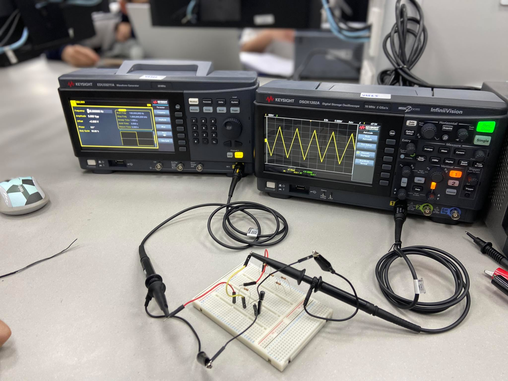
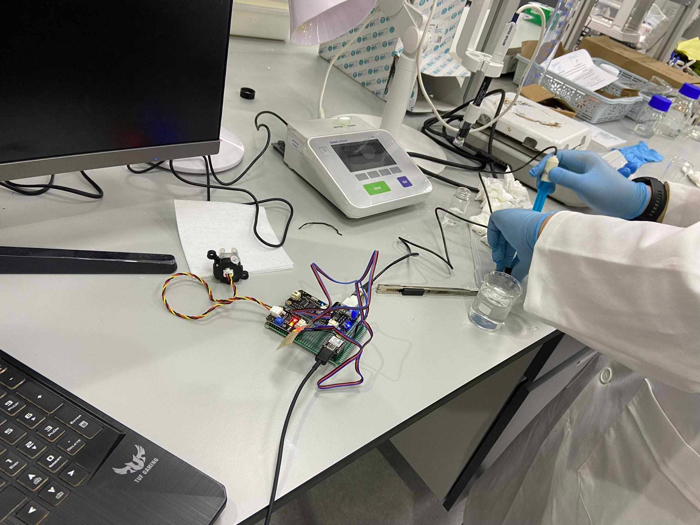
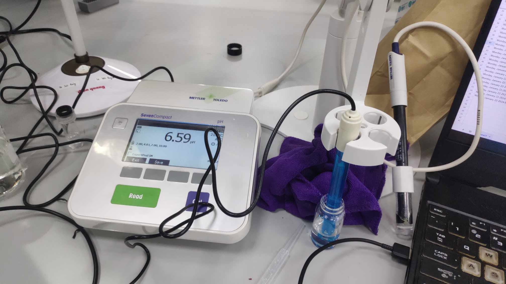
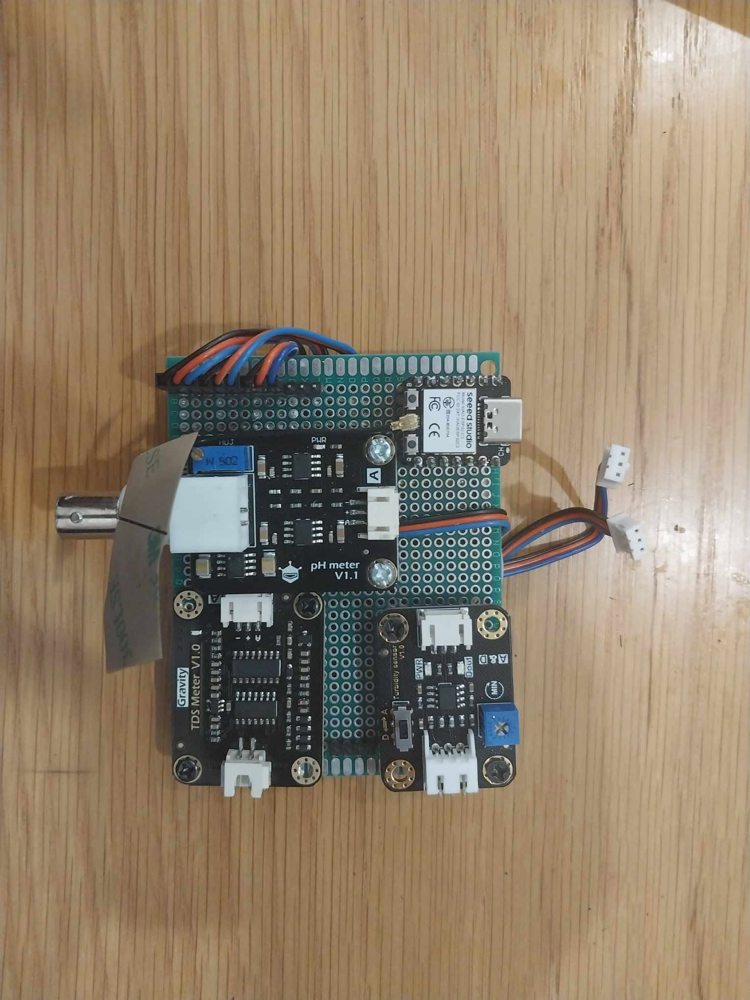
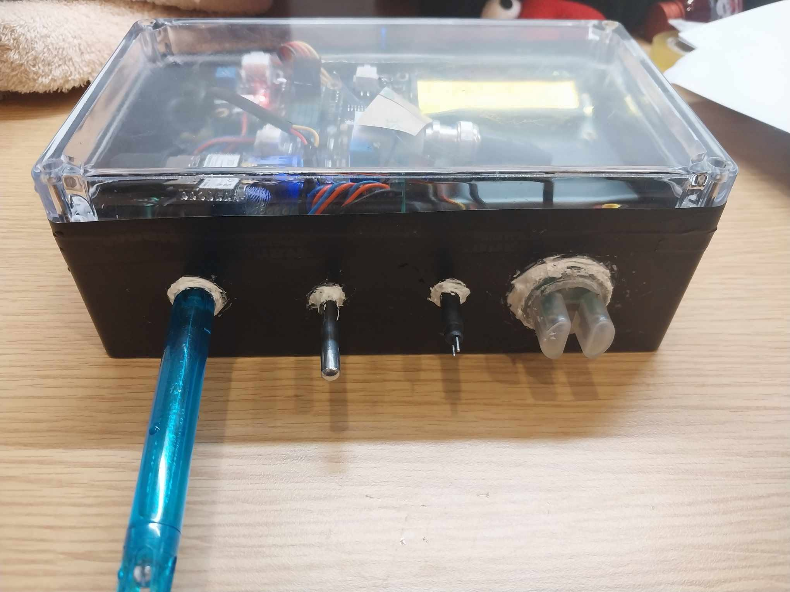
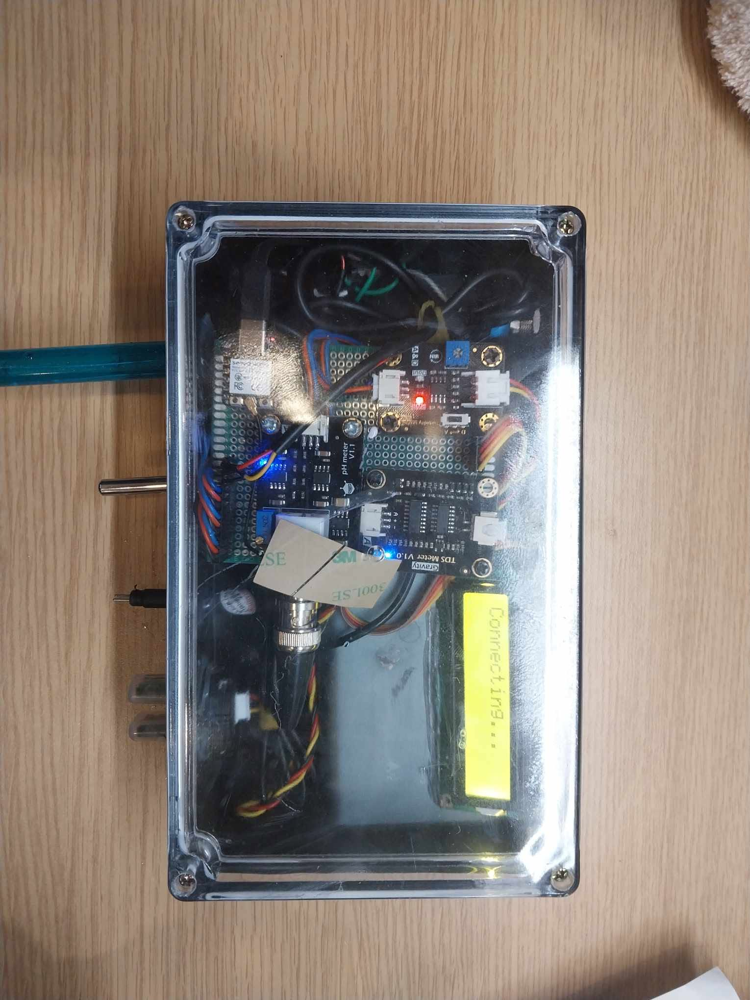
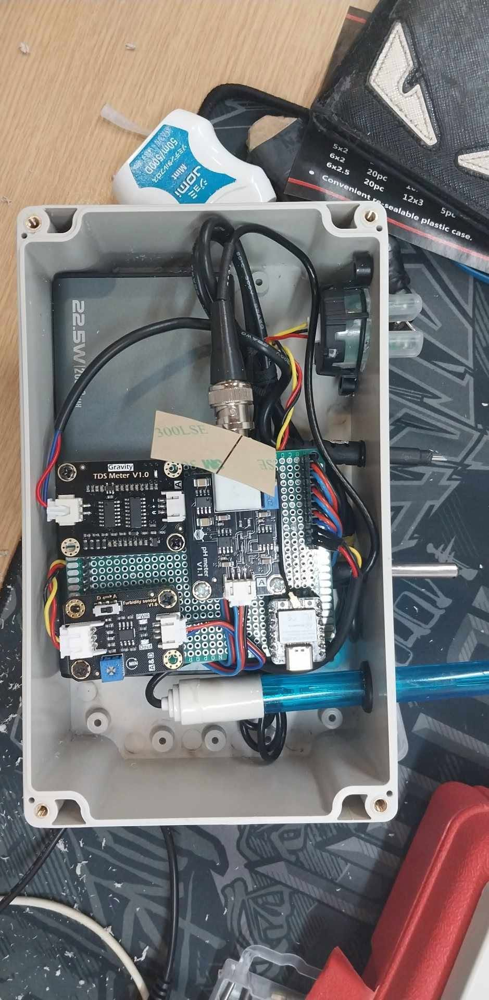
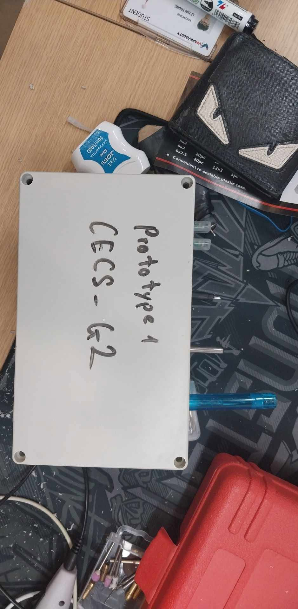
System Design and Interface
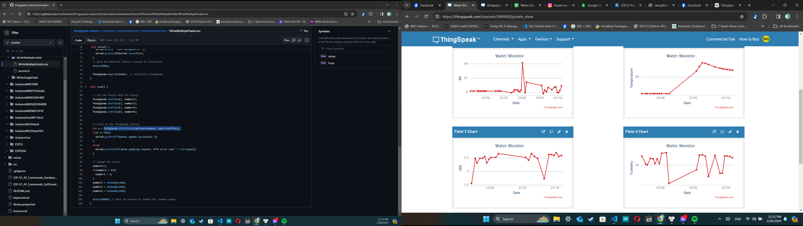
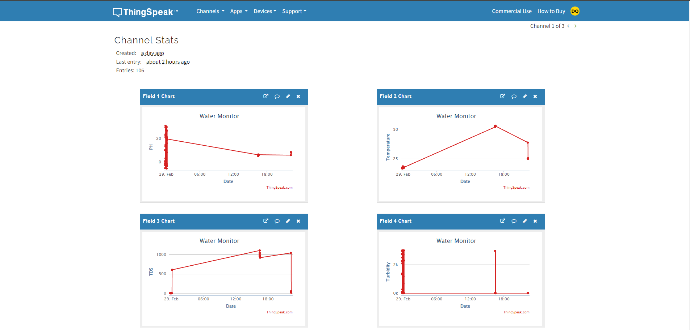
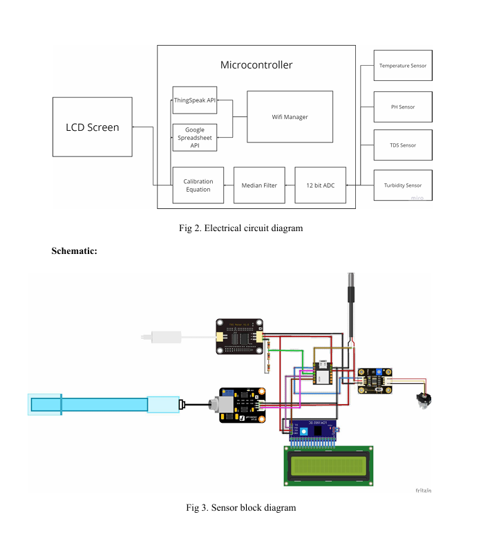
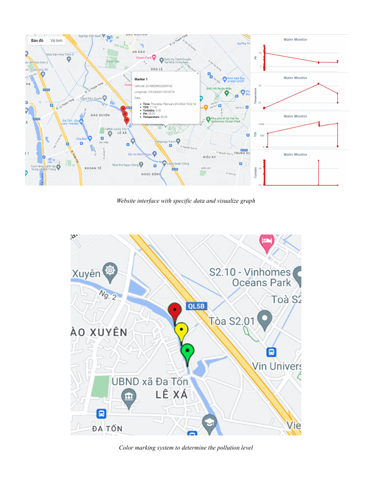
Testing and Results
The report documents sensor calibration, wireless upload testing, website integration, and battery-runtime evaluation. During prototype testing, Google Sheets API delay was approximately 300 ms, ThingSpeak update delay was approximately 20 s, and the measured battery runtime was 2 days, 9 hours, and 24 minutes.